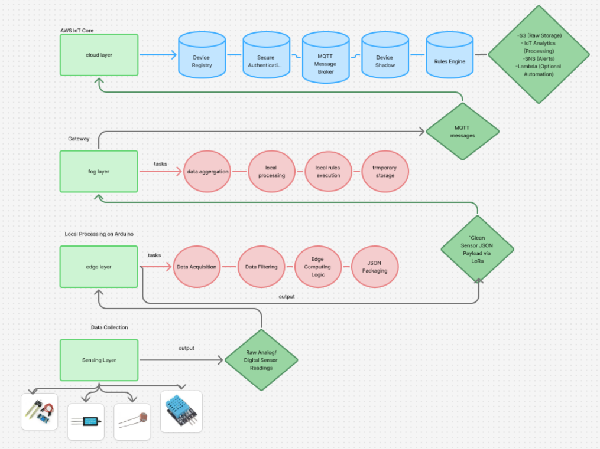

A hybrid framework combining practical Fog computing implementation with a comprehensive AWS Cloud architectural blueprint for smart farming.
Traditional farming systems often react only when soil moisture becomes critical, which fails to optimize water usage and stresses crops. Furthermore, agricultural environments require robust architectures that can prevent data loss during frequent internet outages, minimize cloud bandwidth, and maintain operations autonomously.
This framework presents a hybrid IoT solution that splits responsibilities between physical implementation and cloud system design. On the hardware side, a functional Sensing and Edge layer that connects to a local Fog Node was built for real-time processing and offline data storage. To complete the framework, a detailed, highly scalable AWS Cloud pipeline designed to securely ingest this data and route it for future machine learning analytics was architected.
The deployed portion of the architecture features edge sensors communicating locally with the Fog Node. The extended design maps the theoretical flow: from the Fog Node, aggregated data is securely transmitted to AWS IoT Core. From this central hub, data is routed to IoT Analytics for processing and SageMaker for predictive modeling.

Rather than relying solely on reactive triggers, a comprehensive Machine Learning strategy was designed for future deployment using Amazon SageMaker.
Dive into the GitHub repository to view the implemented edge device scripts, structured data payloads, and the comprehensive cloud architecture blueprint.
View on GitHub ↗